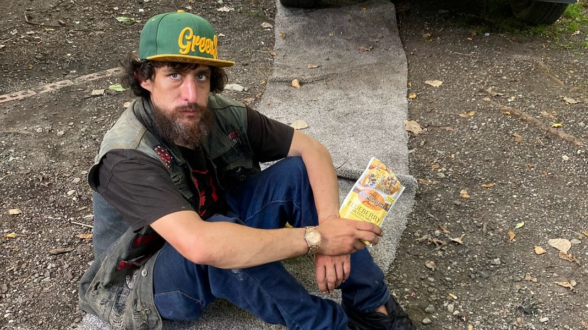

Timeline photos
This is Aaron.
I took this picture in September 2022.
He came to me on this day after not having eaten in 2 or 3 days. He was starving. I looked around, and all I had was this packet of muffin mix. He took it, sat here on the ground, and ate the entire packet. Can you imagine being so hungry that you felt compelled to each dry muffin mix?
I have developed a deep, profound love for this man.
Last week, I ran into him at the Family Dollar Store. He was sitting with his back against the propane tank cage.
I asked him how he was. He started sobbing. "I have nothing," he said.
I have never known someone who embodied that statement more than Aaron. He deeply, truly, has nothing.
I asked him what he wanted. He said he wanted a drink.
I asked him what kind of drink he wanted. He said he wanted anything. Maybe something with electrolytes. I asked him what flavor he liked. He said he liked all the flavors.
I found a drink called Body Armor. I had never seen it before.
I brought it to him. He said he LOVED Body Armor. He told me all the good things it had in it. Coconut water, vitamins, minerals and electrolytes.
I don't feel sorry for Aaron. I don't feel pity for Aaron. All I have for Aaron is love. It's like nearly all the humanness has been sanded off, and his pure soul is all that is left. Pure suffering, pure gratitude, pure thankfulness. Pure life.
Maybe that's what all our suffering is for. To wear down the pride, selfishness, and ego to just finally get to the heart of it all. To finally get to the essence of life, which is pure gratitude, pure thankfulness for any gift you have been given because your suffering is so profound.
Imagine being in a place in your life where you are deeply thankful for a packet of dry muffin mix. How do you look at the situation? Do you see unimaginable suffering, or do you see unimaginable thankfulness? Or do you see both? You should be able to see both.
Suffering always leads to gratitude for the relief of suffering. Always. The greater the suffering, the greater the blessings that will come from its relief.
If you are suffering this Christmas season, I am so very deeply sorry. This can be such a difficult time.
I love you. Please try to find something that will bring you even a moment of peace and thankfulness if you can.